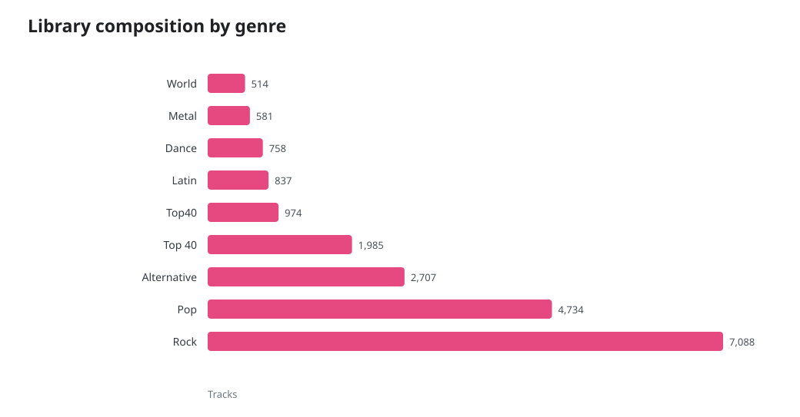
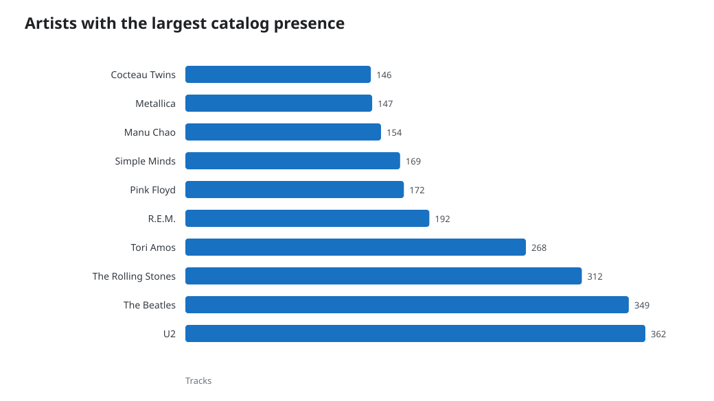
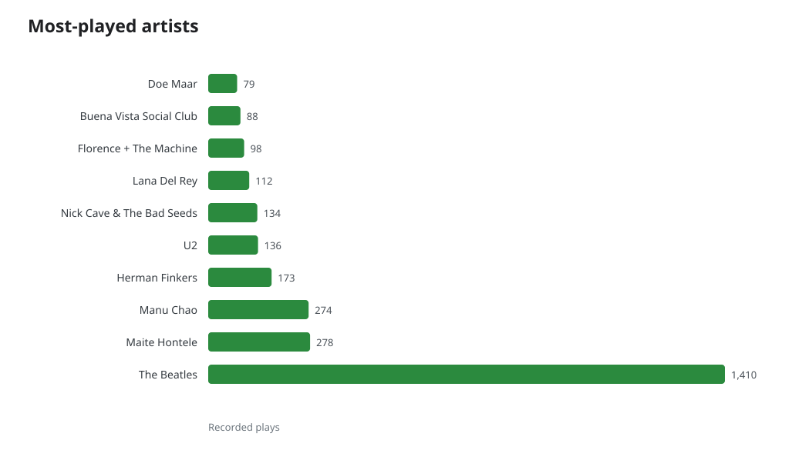
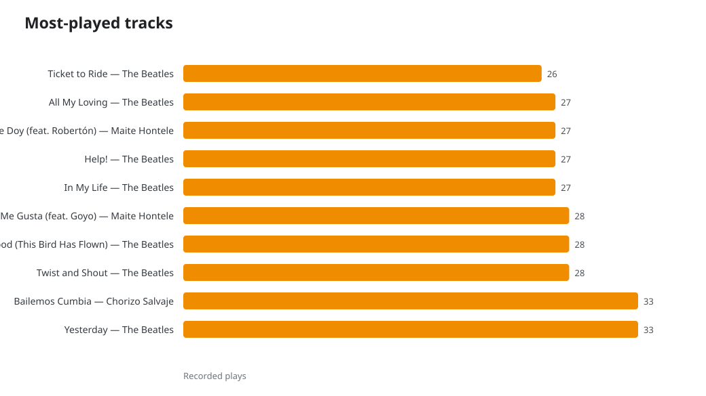
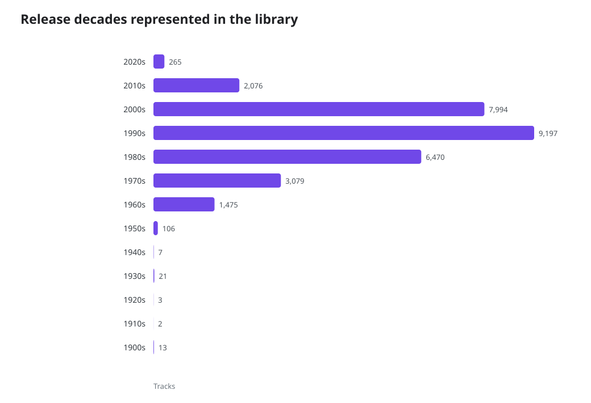
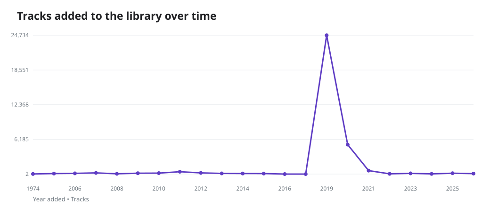

Your Music Library
A snapshot of 32,831 audio tracks exported on July 24, 2026.
Executive Summary
- A large, deep collection: 32,831 tracks by 8,932 artists, spanning 17,504 artist-album combinations and roughly 2,200 hours of music.
- Listening counters are selective: 8,721 plays are recorded across 3,908 tracks (11.9% of the library). They offer a useful favorites view, but not a complete listening-history record.
- Metadata is broadly rich: 31,845 tracks have genres and 30,714 have release years. 6,215 tracks are Apple Music items and 12,721 are matched.
Library at a glance
What the collection contains
The catalog is best read through its breadth and depth. The first two charts show the genre mix and the artists represented by the most tracks, while the release-era chart reveals the periods covered by the library.
Genre mix

Genres describe 32,026 tracks; the remainder have no genre metadata.
Catalog depth

Track counts, not plays: this shows the artists most represented in the collection.
Listening history

Based on the 3,909 tracks with a recorded play count.
Top tracks

Recorded plays reflect the export’s current counters rather than complete streaming history.
Release eras

Tracks with a valid release year only.
Collection growth

The year the track was added to this library.
What has been played most
Recorded plays concentrate the listening story. Artist and track rankings below use the export’s current “Play Count” values. They do not include plays without a counter, so they should be treated as a partial preference signal.
| Track | Artist | Recorded plays |
|---|---|---|
| Yesterday | The Beatles | 33 |
| Bailemos Cumbia | Chorizo Salvaje | 33 |
| Twist and Shout | The Beatles | 28 |
| Norwegian Wood (This Bird Has Flown) | The Beatles | 28 |
| A Mí Me Gusta (feat. Goyo) | Maite Hontele | 28 |
| In My Life | The Beatles | 27 |
| Help! | The Beatles | 27 |
| Gracias Te Doy (feat. Robertón) | Maite Hontele | 27 |
| All My Loving | The Beatles | 27 |
| Ticket to Ride | The Beatles | 26 |
Recommended next steps
- Use the genre and era charts to identify areas to explore with new playlists or smart collections.
- Keep play counts enabled and periodically export the XML if you want a durable listening-history trend.
- Fill in missing genre and year metadata for cleaner future library analysis.
Caveats
This report is a point-in-time analysis of Bibliotheek.xml. Play, skip, rating, and “loved” fields are sparse in this export, so ratings and skips are intentionally not used as broad behavioral measures. Storage size is the size reported in the XML, and excludes streaming availability not stored locally.